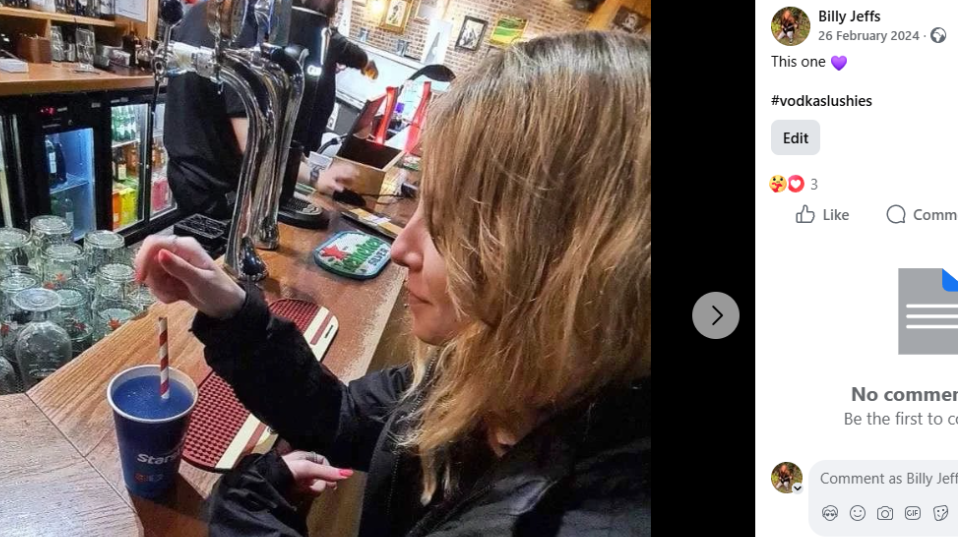

Introduction
Link to original Facebook postI’d like to preface this refutation by being completely open about my past.
As I've always said, I have nothing to hide, and it’s very important that you know exactly what the truth is, and on what basis these individuals are constructing their false narrative.
To put a long story short, back in 2020 I suffered a severe mental breakdown following a personal trauma. To put it briefly, my 19-year-old girlfriend at the time travelled to America to visit her uncle, gradually went off grid, it then surfaced 2 months later that she had married a wealthy 51 year old man, a close friend of her uncles, and was pregnant with his child. Forgive me for going a bit loopy! I was hospitalised for 2 months due to my breakdown, and when in hospital I sent a whole bunch of messages to different people, which I shouldn’t have.
I was arrested from hospital, remanded into custody, and upon sentencing I was given an 18-month community probation order and was released. I gradually made a full recovery and moved on with my life.
My full and up to date police ACRO record is available to anyone who may want to see it. I have never been charged with any sex related, or child related crimes.
You will hopefully have also noticed that in the Herts Ad court listing these people have shared, it clearly says “Men and Women”, and not boys/girls/children.
I’d also urge you to inspect the profile under which this post was made. You will notice that it’s clearly a disused/fake account with less than 20 friends. It also hasn’t been used since 2022 until the day the post was made. ALL of the posts from 2022 and prior were posted on the same day, 9th October 2022 and backdated with no engagement from anyone else whatsoever bar perhaps 1 or 2 likes. Need I say more!
Rebuttal
(Reposted) Please Exercise Caution - (Reposted) Updated - I never said that Billy was on the sex register read the statement correctly, as for everyone else who thinks billy such a nice guy Ive posted the messages I've had from him and how he talks to girls, I was a fool to believe he was single I hold my hands up but he a good charmer and he charmed me I stand by what I said below about Billy the information is in the screen shots thats from Google if you don't want to see the facts then google him.So the above update was a direct retaliation to my post on the Ashwell Hub. Remarkable really to think how “Jasmin” who lives in Stevenage saw my rebuttal so quickly given they weren't tagged!? I won’t even entertain the fabricated chat messages, since anybody who knows me is aware that I don’t speak like a socially inept teenager. A clear attempt to try to cause problems in my current relationship, however all it achieved was giving Lottie and myself a bloody good laugh!
--Orignal post -- Residents of Ashwell and surrounding villages - Advise to be vigilant regarding an individual known locally as Billy Jeffs, previously known as Carl Jeffs (Changed in May 2021).So I already proved this to be false in the comments of my post on the hub, but feel free to google it yourselves. I’ve used the name Billy since the early 2010’s and there is endless evidence to that effect. Here’s a BBC news article fron 2014 confirming this for starters:

Carl Jeffs has a criminal history involving serious offences against minors boys and girls. He was previously convicted for sending offensive texts and inappropriate texts to girls and boys now has a restraining order to protect the victim.Again, if I were to be convicted of these kinds of crimes, I would automatically be on the SOR, and I am not. “I never said that Billy was on the sex register”, yes you did.
During his incarceration/Remand, it has been reported that he admitted to a cellmate that he was pursuing contact with a young girl, though he claimed the girl had told him she was older. After serving his sentence/Remand, Carl was issued a restraining order relating to these individuals.Firstly, these people don’t seem to have the intelligence to know that a sentence and being on remand are two very different things. Secondly, they don’t have microphones in prison cells! I have no clue how such a conversation, had it have taken place, would ever be able to be “reported”.
Following public outrage in his former town of Harpendon Hertfordshire, he left the area and relocated to Ashwell, adopting the name Billy Jeffs i.e his middle name as Carl Billy Jeff which this move was to try and “restart” his life. Since moving to Ashwell, concerns about his behaviour have continued:I did indeed leave Harpenden to leave the bad times behind and first moved to Stotfold above the Stag pub. It is widely known that I next moved to Hinxworth on Farrowby Farm, and finally to Ashwell when some lovely people offered me a home. “Carl Billy Jeff”, good one! My full name is Carl William Jeffs, my passport and driving license is available on request! And as aforementioned, I changed to using Billy in the early 2010’s.
Interaction with minors: He has observed children into his private swimming pool with his own CCTV on his property, which is monitored by himself only.Many friends in the village have bought their children to the pool. I’m lucky to have it and I like to share it with all. Everybody who has been have been fully aware that I have CCTV in my pool area, and you may all have seen the video I posted of me rescuing a baby deer from the pool. It’s not a secret, and Lottie also has full access to it.
Not only does he lie to members of the Public to defend himself his is also now lying to his own GF because Carl can't have children.This one is comical to say the least! My partner is and has always been fully aware that I cannot have children 🤣
He has also been the one thanks very violent attacking peoples of the public in Pubs (I won't name the pub because the pub has nothing to do with this)The grammar is incredible, my personal favourite.
Conflict in public settings: He has been involved in disputes at local pubs and public places, often portraying himself as the victim or blaming others for his actions which we have all started to see is false now.It quickly starts to become clear that this was written by someone with a bitter grudge. These statements likely refer to an incident at my local pub when I was verbally and physically attacked by an acquaintance of the authors, whilst sitting with my girlfriend, and had to defend myself. I sustained a broken nose as a result, which I’m now having to have surgery for.
When he doesn't get his own way not only does he like to start trouble but he becomes very scary, which if he can handle what he has caused he then calls the police and plays the victim.I’d like to think that the last word people would use to describe me is “Scary” 😋
Aggressive and manipulative behaviour: He has a documented history of aggression toward former partners and is known to misrepresent situations or manipulate narratives to his advantage.I’d very much like to see these documents, why ever weren’t they included in the post?! 🤔 I did accidentally give Lottie a nosebleed once when the reps on holiday forced us to have a pool noodle fight and it caught her nose piercing 😆 but that’s all I can think of!
His ex GF (I won't name) has also shared her views on what he is like and the word is very abusive and demanding when he doesn't get his own way he likes to attack them and then play the victim in the matter.If you’d really spoken to my ex girlfriend, she’d have told you that we broke up in 2023 and not 4 years ago as you try to suggest below 😅
Parents and guardians should exercise extreme caution and ensure their children are supervised at all times or to avoid his property full stop, better off people are saying to avoid him full stop......Reeeally trying to drill it now aren’t we. Very professional.
Billy Jeffs is currently 37 (2nd August 1988 and is now in a relationship with a 21-year-old. which they have been together now for 4 years which this would make the ages when they first met (Billy - 33 and GF - 17 years old).This is the best one! It is common knowledge that Lottie and I met each other and got together less than 2 years ago when she was 20. Here’s a picture from our first date! 
He has been trying to deflect people by calling others *****, which he has been the one to text images to young child and also is the one with the restraining order.No words needed at this point...
Given his history and patterns of behaviour, community members are urged to remain vigilant, limit unsupervised interactions between him and children, and exercise caution in any personal interactions. If anyone observes concerning behaviour or believes a child may be at risk, it is strongly recommended to contact local authorities immediately.
Conclusion
In summary, I hope we can agree that this post was put together by some very immature individuals who don’t have the foresight to realise that lies can easily be proven false, and that there are consequences for your actions.Hertfordshire police have logged the following crime: Sending false communication with intent to cause harm.
The police have been incredibly proactive and supportive, and whilst investigating cybercrime can take some time, we are confident that the people behind this campaign will be apprehended and held fully accountable.
Again, thank you to my friends, family and neighbours for being by my side during this unpleasantness.
If anyone has any further questions or information relating to this issue, please do get in touch.
Email - billy@memoriesofold.co.uk
Tel - 07882 162 037